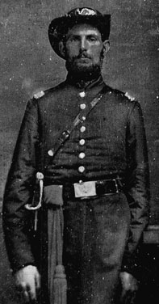

|

NAME: Alexander Petrie
BORN: ?
DIED: 1898
ALLEGIANCE: Union
HIGHEST RANK: Lieutenant
UNIT: 112th Illinois Infantry, Company C
RECORD: Enlisted August 1862. Mustered in September
20. Commissioned lieutenant that autumn. Mustered out at
Greensboro, North Carolina, on June 20, 1865. Discharged at
Chicago, Illinois, July 7.
|
|
The state of Illinois responded generously to the Federal
government's early calls for volunteer troops to quell the
rebellion in the Southern states, ultimately supplying more
than 250,000 infantrymen to serve the North. Among that
number were Alexander and Edward Petrie of Rivoli, in
Mercer County, who enlisted together as privates in August
1862. They became part of Company C of the 112th Illinois
when the regiment was organized in Peoria that September.
The regimental commanders must have seen something special
in Alexander; shortly after mustering in, he was appointed
orderly sergeant, and then promoted to the rank of
lieutenant. This photo was taken after that promotion.
On October 8, 1862, the Petrie brothers moved with their
regiment to eastern Kentucky, and helped establish Union
control of that region. During the spring of 1863, the
regiment's men were given horses and became "mounted
infantry." 200 of the unit's best horsemen were chosen to
accompany Colonel William P. Sanders on his daring raid into
east Tennessee that June; both Alexander and his brother
were among that number. They also participated, with the
rest of their regiment, in Major General Ambrose Burnside's
campaign in east Tennessee in 1863 and 1864. After the
January 1864 fight at Kelly's Ford, Tennessee, the
Illinoisans were dismounted to resume life as foot soldiers.
The 112th joined the armies of Major General William T.
Sherman for the campaign against Atlanta, Georgia. After
that city fell to the Union in September 1864, the regiment
was separated from Sherman's force and shifted to help
defend Tennessee from the troops of Confederate General John
Bell Hood. They took part in the Battles of Columbia,
Franklin, and Nashville, Tennessee. In the Battle of
Franklin on November 30, Alexander's brother Edward was
killed.
The 112th was part of the force that pursued Hood back
across the Tennessee River. The unit then moved to North
Carolina, where it took part in the Carolinas Campaign in
March and April, and witnessed the surrender of General
Joseph E. Johnston's Confederate army on April 26 at Durham
Station, North Carolina. They continued on duty in that
state until June 20, when they where mustered out and sent
home to Illinois.
After being discharged in Chicago, Alexander returned to
farming in his home state. In 1880 he ran for and won a seat
in the state House of Representatives. He died in December
1898 in New Windsor, Illinois.
Source: Civil War Times Illustrated
35:5 (October 1996), 96.
|